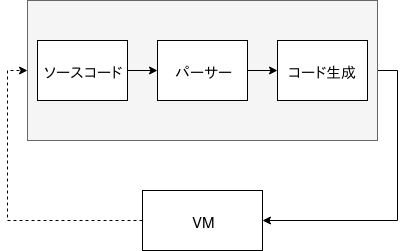

この記事は何?
セキュリティキャンプ 修了生進捗 #seccamp OB/OG Advent Calendar 2018 20日目。
この記事では，セキュキャンが始まるちょっと前から作り始めた自作JSエンジン rapidus の進捗と，簡単に内部構造を説明していきたいと思います．
目次
- 大まかな仕様
- 内部構造
- パーサー
- コード生成
- VM
- ….
1. 大まかな仕様
TL;DR
- だいたいJSっぽいコードを書いて実行できる(===規格に完全には沿えていない)
- REPLがちょっと使える
- Tracing-JITに部分的には対応している(===うまく行くとめちゃくちゃ速い. NodeJSより速い.)
- 最近，Rustで書いたDLLを
requireから使えるようになった(===もはやなんでもできる!) - また最近，非同期処理の実装を始めた
ちょっと詳しく
2. 内部構造
内部構造なんて大層なものではないですが、大体こんな感じ:

ソースコードが，パーサー→意味解析→コード生成と段階を経てVMで実行できる形式に変換されます．
VMから点線で矢印が出ていますが，これはevalやrequireなんかでVMからソースコード→…→コード生成をしないといけない場合があるからです．
パーサー (src/parser.rs)
構文解析器（こうぶんかいせきき）とは、構文解析をおこなうプログラム。パーサ (parser)とも。プログラミング言語処理系の入力部分が代表的であるが、それに限らず設定ファイルの読み込みなど、構造を持った入力テキストの処理を行う。自然言語処理でも使われる。
rapidusのパーサーは基本的に手書きの再帰下降構文解析器で構成されています．若干コード生成に関係するような処理もしていますが，基本的にはパーサーとしての機能のみを果たしています．特に面白い実装がしてあるわけでもないです．